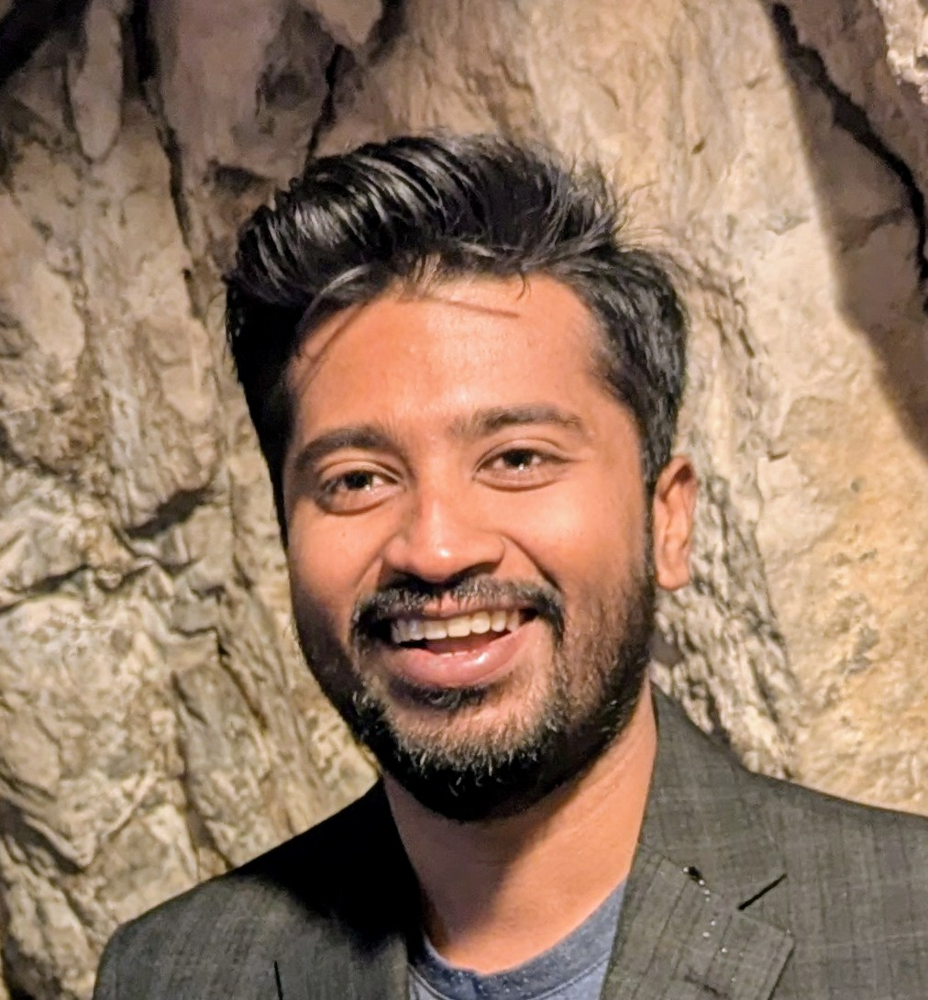

Sintering Materials Research Lab
We study how loose powder gets transformed into dense, high performance materials such as nuclear fuel at University of Saskatchewan, Saskatoon.
Drag the slider to watch sintering in action. This is a simplified sketch of solid-state sintering, not a simulation of a specific material. Density is measured from the right panel, which is a flat 2D slice of the material. A free-standing 3D-printed part has no walls around it, so it shrinks in every direction, about 20% in length. In a spark plasma sintering die, the walls stop the powder shrinking sideways, so only its height changes: it drops by about half as the density goes from 50% to 99%. The die is cut in half along its axis so the powder inside can be seen, and the faint warm tint shows heating. Both are illustrative. The printed part is shown from a fixed angle, with the layer height exaggerated so the layers stay visible. Box A is not drawn to scale: the right panel covers only a few hundred micrometres of the material. Particles are about 20 µm across, which is illustrative.
About the lab
Sintering bonds powder particles into a solid by heating them below their melting point. Atoms move across the contacts between particles, necks form, pores close, and the part densifies. The temperature, time, pressure, and atmosphere we choose set the microstructure, which in turn set how the material performs in service.
The lab's vision is unearthing the relationship between manufacturing process, structure, and property in materials fabricated using sintering.
We start with nuclear materials and fuel, where the way a material is made has a large effect on how it performs in a reactor. The same questions come up wherever powders are turned into parts that must survive heat, wear, corrosion or radiation, so we also want to apply our work to mining, agriculture, oil and gas, and other industries that depend on sintered materials.
Research
Our core is nuclear materials and fuel. Our approach is broader: link how a material is made to its structure, and its structure to how it performs.
Nuclear materials and fuel
Reactor fuel has been made by pressing and sintering uranium dioxide powder for decades. Newer reactor designs call for fuels that conduct heat better, hold in fission products better, and can take new shapes. How fabrication conditions control those properties is not yet well understood, and that is the gap we work on.
Advanced technology fuels
Uranium dioxide fuel with additives or dopants that improve heat conduction and the retention of fission products. We study how the additive and the sintering route, from conventional press-and-sinter to spark plasma sintering, change the microstructure and the resulting properties.
TRISO fuel
TRISO fuel packs small coated fuel particles into a compact. We study how to make compacts that hold more particles without damaging them, and how the particles interact while they are pressed and heated.
3D-printed fuel
Printing can make fuel shapes, such as internal channels and fins, that pressing cannot. We work on feedstock, binder removal and sintering so that printed parts are dense and chemically clean, and we compare them with injection-molded parts of the same shape.
Spent fuel and waste forms
Spark plasma sintering can turn stabilized spent research-reactor fuel into dense pellets for long-term disposal. We are interested in how sintering conditions, tooling and fuel chemistry affect pellet quality and the release of fission products during processing.
Radiation sources and detectors
3D printing can shape radiation sources and scintillator materials for detection and nuclear forensics. We are interested in printing these materials with controlled composition and geometry.
How we work
The same three steps apply to every material we study.
Process
We combine conventional press-and-sinter, spark plasma sintering, 3D printing and powder injection molding to make test materials, and we use them to prototype new compositions and shapes quickly.
Structure
Laboratory methods such as X-ray diffraction, electron microscopy and metallography, together with synchrotron techniques at the Canadian Light Source, show how processing changes chemistry, phases, grain size, porosity and defects.
Performance
Measurements such as thermal conductivity show how structure turns into performance. With partners, we aim to follow promising materials into test-reactor irradiation.
Where we want to grow
Sintering is used well beyond nuclear power. We want to carry what we learn about nuclear materials into other industries that matter to Saskatchewan and Canada. These are directions we are exploring, and we are looking for partners to shape them with us.
Mining
Wear-resistant and corrosion-resistant sintered parts, such as hard-metal tools for drilling and cutting and components for mineral processing. Dr. Prasad has worked with industry on metallurgical failure analysis of mining parts such as crusher hammers, drag chains and slurry pump components.
Agriculture
Longer-lasting parts for equipment that works in abrasive soil and grain, where wear drives cost and downtime.
Oil and gas
Ceramic proppants, which hold fractures open in hydraulic fracturing, and wear- and corrosion-resistant components for harsh downhole conditions.
Other energy and manufacturing
High-temperature ceramics, powder-metal parts, and additive manufacturing of metals and ceramics, wherever the way a part is made decides how long it lasts. Dr. Prasad has also used spark plasma sintering for solid electrolytes, heat sinks, microfluidic parts and grain refiners for aluminum alloys.
Have a materials problem in one of these areas, or want to explore a joint project?
Capabilities and partners
The Sintering Materials Research Lab is new. We are building our own laboratory, and until it is ready we work through shared facilities and collaborations.
Our laboratory
Being established in the Department of Mechanical Engineering.
Experience
Our principal investigator has set up and run laboratories for radioactive materials, including the first spark plasma sintering facility in Canada equipped for this work, and has hired, trained and supervised students and technologists.
Synchrotron characterization
The Canadian Light Source, Canada's national synchrotron facility, is on the University of Saskatchewan campus. Its X-ray techniques let us look inside materials at small scales, including how defects, phases and particles change during processing.
Collaborators
We work with researchers at the University of Saskatchewan, Canadian Nuclear Laboratories, and other universities and industry, and we welcome new partners.
People

Dr. Anil Prasad
Principal investigator. Assistant Professor, Department of Mechanical Engineering, College of Engineering. Ph.D., P.Eng.
Dr. Prasad joined the University of Saskatchewan as an Assistant Professor in September 2026. He holds a PhD (2020) and MASc (2017) in Mechanical Engineering from UBC Okanagan and a B.Tech from IIT Madras. From 2020 to 2026 he was a Fuel Scientist at Canadian Nuclear Laboratories (CNL), where he led work on spark plasma sintering and additive manufacturing of nuclear materials. He remains an Adjunct Professor at UBC. During his graduate work he set up the first spark plasma sintering facility in Canada equipped to process radioactive materials. At CNL he fabricated the first additively manufactured dense uranium dioxide part, founded the CNL 3D Printing User Group, and received the 2023 D.F. Torgerson Discovery Award. He also created the Pan-Canadian TRISO Academic Working Group.
Students and postdoctoral researchers will be listed here as they join the lab. See Join the lab if you would like to be one of them.
Publications
Journal articles and conference papers, newest first. Citation counts and the latest additions are on Google Scholar and ORCID.
- Prasad, A., Spencer, M., Crigger, J., Bakshi, A., Spengen, T., Dickson, R., Thiessen, S. Stabilization of research reactor spent nuclear fuels: pellet formation using spark plasma sintering. doi:10.1080/00295450.2026.2712097
- Prasad, A., Dickson, R., Crigger, J., Barry, A., Geiger, E., Spencer, M., Bakshi, A. Stabilization of research reactor spent nuclear fuels: fuel types and oxidation in air. doi:10.1080/00295450.2026.2675131
- Huston, D. A., Prasad, A., Kotsios, N., Bergeron, A., Kelly, F., Corcoran, E. C. Progress toward instrumented nuclear fuel pellets using additive manufacturing. doi:10.1080/00295450.2025.2472094
- Prasad, A., Bergeron, A., Liu, C., Cruse, A., Bichler, L. Spark plasma sintering of urania-thoria duplex fuel pellet.
- Prasad, A., Tummalapalli, M. K., Malakkal, L., et al. Master (spark plasma) sintering curve of UO2 and UO2-Mo fuel material. doi:10.1115/1.4068390
- Prasad, A., Ali, Z., Cruse, A., Bergeron, A., Namburi, H., Buckley, J., Battersby, J., Rich, K., Pillari, L. K., Spencer, M., Mottershead, O., Morrison, P., Osmond, R., Szlachta, V., Thiriet, C., Bichler, L. Exploring spark plasma sintering as a promising method for TRISO compact fabrication. doi:10.13182/TOPFUEL25-48648
- Prasad, A., Barry, A., Geiger, E., Crigger, J., Spencer, M. Investigation of die liners for spark plasma sintering in stabilization of spent research reactor fuel.
- Spencer, M., Prasad, A., Crigger, J., Dickson, R., Barry, A., Bergeron, A., Geiger, E., Spengen, T. Stabilization of research reactor spent nuclear fuels: investigation of potential fission product release during pellet formation using spark plasma sintering.
- Cruse, A., Rich, K., Prasad, A., Mottershead, O., Buckley, J., Xu, S., Situm, A. Progress towards the fabrication of uranium oxycarbide pellets using spark plasma sintering.
- Prasad, A., Ranasinghe, J., Malakkal, L., Bichler, L., Szpunar, J., Liu, C. Spark plasma sintering of fuel meats for U3O8 based dispersion fuels. doi:10.1016/j.nucengdes.2024.113398
- Prasad, A., Kotsios, N., Bergeron, A., Thiriet, C., Buenaventura, A., Cluff, D., Pawlowska, V., Battersby, J., Morrison, P., Crigger, J., Osmond, R. Progress in additive manufacturing of uranium dioxide parts.
- Prasad, A., Malakkal, L., Bichler, L., Szpunar, J. Spark plasma sintering of cerium (IV) oxide under a carbon dioxide atmosphere. doi:10.1007/s10832-024-00363-z
Show earlier publications (24)
- Prasad, A., Kermani, A., Osmond, R., Morrison, P., Szlachta, V., Atfield, J., Yaraskavitch, L. Fabrication of homogenised TRISO analogue fuel for reactor physics testing.
- Prasad, A., Spencer, M., Geiger, E., Barry, A. Application of spark plasma sintering for stabilisation of spent research reactor fuel materials.
- Buckley, J., Spencer, M., Prasad, A., Battersby, J., Osmond, R., Thiriet, C., Pawlowska, V., Pillari, L., Bichler, L. Fabrication of graphitic matrix fuel compacts applicable to high temperature gas cooled reactors.
- Liu, C., Prasad, A., Kotsios, N., Afolabi, O., Bentoumi, G., Li, L. The use of additive manufacturing for fabrication of radiation sources in nuclear forensics applications.
- Malakkal, L., Prasad, A., Ranasinghe, J., Tummalapalli, M. K., Jossou, E., Bichler, L., Szpunar, J. Enhanced thermal conductivity of spark plasma sintered thorium dioxide-silicon carbide composite fuel pellets.
- Spencer, M., Barry, A., Bergeron, A., Crigger, B., Dickson, R., Goliad, A., Prasad, A., Stoddard, T. The use of spark plasma sintering for compact formation from chemically stabilised research reactor fuels for disposal.
- Karanam, A., Prasad, A., Bichler, L., Birnie-Browne, R. In-service performance of high-manganese steel clinker crusher hammer.
- Tummalapalli, M. K., Szpunar, J. A., Prasad, A., Malakkal, L., Bichler, L. Evaluation of thermophysical properties of UO2-10 vol% Mo nuclear fuel pellets. doi:10.1016/j.jnucmat.2021.153444
- Tummalapalli, M. K., Szpunar, J. A., Prasad, A., Bichler, L. EBSD studies on microstructure and crystallographic orientation of UO2-Mo composite fuels.
- Ranasinghe, J., Malakkal, L., Szpunar, B., Prasad, A., Jossou, E., Szpunar, J., Bichler, L. DFT and experimental study on the thermal conductivity of U3O8 and U3O8-X (X = Al and Mo). doi:10.1016/j.jnucmat.2021.152900
- Karati, A., Hariharan, V. S., Ghosh, S., Prasad, A., Nagini, M., Guruvidyathri, K., Mallik, R. C., Shabadi, R., Bichler, L., Murty, B. S., Varadaraju, U. V. Thermoelectric properties of half-Heusler high-entropy Ti2NiCoSn1-xSb1+x (x = 0.5, 1) alloys with VEC > 18.
- Zhu, H., Prasad, A., Doja, S., Bichler, L., Liu, J. Spark plasma sintering of lithium aluminum germanium phosphate solid electrolyte and its electrochemical properties.
- Malakkal, L., Prasad, A., Ranasinghe, J., Jossou, E., Olamedji, D., Szpunar, B., Bichler, L., Szpunar, J. The effect of SPS processing parameters on the microstructure and thermal conductivity of ThO2.
- Malakkal, L., Prasad, A., Jossou, E., Ranasinghe, J., Szpunar, B., Bichler, L., Szpunar, J. Thermal conductivity of bulk and porous ThO2: atomistic and experimental study.
- Prasad, A., Malakkal, L., Szpunar, J., Bichler, L. Optimizing processing conditions for thorium dioxide using spark plasma sintering. doi:10.1002/9781119631460.ch12
- Malakkal, L., Prasad, A., Oladimeji, D., Jossou, E., Ranasinghe, J., Szpunar, B., Bichler, L., Szpunar, J. Atomistic and experimental study on thermal conductivity of bulk and porous cerium dioxide.
- Prasad, A., Lafortune, L., Mok, J., Bichler, L. An investigation on spark plasma sintering of a carbon black grain refiner for the aluminum alloy B319.
- Prasad, A., Mok, J., Lafortune, L., Bichler, L. Grain refinement of B319 alloy using spark plasma sintered Al–Ti–C grain refiners.
- Doja, S., Prasad, A., Bichler, L. Spark plasma sintering of pure cadmium.
- Chattopadhyay, C., Prasad, A., Murty, B. S. Phase prediction in high entropy alloys: a kinetic approach.
- Prasad, A., Malakkal, L., Bichler, L., Szpunar, J. Challenges in spark plasma sintering of cerium (IV) oxide.
- Prasad, A., Doja, S., Bichler, L. On the effect of electric field during spark plasma sintering: a “Faraday cage” approach.
- Vaidya, M., Prasad, A., Parakh, A., Murty, B. S. Influence of sequence of elemental addition on phase evolution in nanocrystalline AlCoCrFeNi: novel approach to alloy synthesis using mechanical alloying.
- Prasad, A., Malakkal, L., Bichler, L., Szpunar, J. Effect of spark plasma sintering process parameters on density and microstructure of cerium (IV) oxide.
News
- Dr. Anil Prasad joins the Department of Mechanical Engineering at the University of Saskatchewan as an Assistant Professor and starts the Sintering Materials Research Lab.
Join the lab
We are looking for graduate students and undergraduate researchers who want to work on nuclear materials and fuel, and on sintering-based materials for mining, agriculture, energy and other industries.
To ask about a position, email Dr. Prasad with your CV, unofficial transcripts, and a short note on which of our research themes interests you and why. Graduate applicants also apply through the University of Saskatchewan's College of Graduate and Postdoctoral Studies.
Contact
Visit
Sintering Materials Research LabDepartment of Mechanical Engineering
College of Engineering, University of Saskatchewan
3B37, 57 Campus Drive, Saskatoon, SK S7N 5A9.